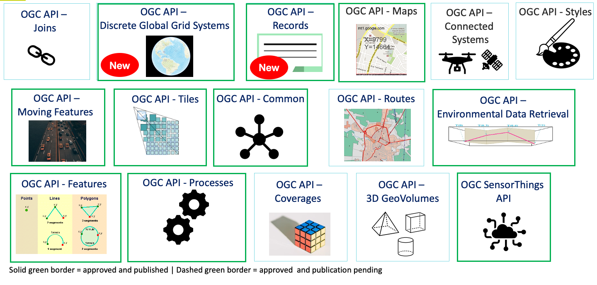

Visão Geral
Esta secção fornece uma visão geral de alto nível do suporte a normas na pygeoapi.
Normas
As normas abertas são o núcleo da pygeoapi e permitem uma ampla interoperabilidade e capacidade plug and play. A pygeoapi suporta uma série de normas abertas (tanto normas formais como de facto ou impulsionadas pela comunidade).
Normas API
OGC API
A pygeoapi implementa o conjunto de normas OGC API do Open Geospatial Consortium (OGC). Do website da OGC API:
Citation
A família de normas OGC API está a ser desenvolvida para facilitar a qualquer pessoa o fornecimento de dados geoespaciais para a web. Estas normas baseiam-se no legado das normas OGC Web Service (WMS, WFS, WCS, WPS, etc.), mas definem APIs centradas em recursos que tiram partido das práticas modernas de desenvolvimento web. Esta página web fornece informações sobre estas normas num local consolidado.
Estas normas estão a ser construídas como "blocos de construção" que podem ser usados para montar APIs inovadoras para acesso via web a conteúdo geoespacial. Os blocos de construção são definidos não só pelos requisitos das normas específicas, mas também através da prototipagem de interoperabilidade e testes no Programa de Inovação da OGC.
Tip
Pode aprender mais sobre as OGC APIs na workshop da OGC API
OGC API - Common
A OGC API - Common é uma estrutura comum utilizada em todas as OGC API. A OGC API - Common fornece a seguinte funcionalidade:
- baseada na OpenAPI 3.0
- HTML e JSON como as codificações dominantes, sendo possíveis codificações alternativas
- endpoints partilhados, tais como:
/(página de entrada)/conformance/openapi/collections/collections/foo
- aspetos como paginação, ligações entre recursos, filtragem básica, parâmetros de consulta (
bbox,datetime, etc.) - modelos partilhados (exceções, ligações, etc.)
A OGC API - Common permite que os programadores de especificações se concentrem na funcionalidade principal de uma determinada API (ou seja, acesso a dados, etc.), utilizando construções comuns. Isto harmoniza as normas OGC API e permite uma integração mais profunda com menos código. Isto também permite que o software cliente da OGC API seja mais simplificado.
O endpoint /conformance indica quais as normas e extensões que são suportadas por uma implementação da OGC API.
Blocos de construção da OGC API
A abordagem da OGC API permite a modularidade e a "criação de perfis" de APIs, dependendo dos seus requisitos. Isto significa que pode misturar e combinar diferentes OGC APIs.

Pode ler mais sobre este tópico no website dos blocos de construção.
Mais OGC APIs
O esforço da OGC API está a evoluir rapidamente. Várias normas OGC API estão em desenvolvimento e serão implementadas na pygeoapi ao longo do tempo:
- Routes fornece acesso a dados de roteamento
- Styles define uma API Web que permite que servidores de mapas, clientes, bem como editores de estilo visual, giram e obtenham estilos
- 3D GeoVolumes facilita a descoberta e o acesso eficientes a conteúdo 3D em múltiplos formatos, com base numa perspetiva centrada no espaço
- Moving Features define uma API que fornece acesso a dados que representam elementos que se movem como corpos rígidos
- Joins suporta a junção de dados, de múltiplas fontes, com coleções de elementos ou diretamente com outros ficheiros de entrada
- Discrete Global Grid System permite que as aplicações organizem e acedam a dados organizados de acordo com um Discrete Global Grid System (DGGS)

OGC APIs suportadas pela pygeoapi
A pygeoapi implementa várias normas e rascunhos de normas da OGC API. Além disso, é certificada em conformidade e até mesmo uma Implementação de Referência (RI) para algumas delas. A certificação de conformidade é importante para remover os riscos de interoperabilidade. As RI são sempre certificadas em conformidade. Do OGC Compliance Testing Program Policies & Procedures 08-134r11:
Citation
Os Produtos Candidatos que passam em todos os testes de um Pacote de Testes de Conformidade, e que a OGC reviu e certificou como tendo passado nesses testes, são considerados conformes com essa versão da Norma de Implementação.
Citation
Uma Implementação de Referência é uma cópia totalmente funcional e licenciada de um software testado e de marca que passou no teste para uma classe de conformidade associada numa versão de uma Norma de Implementação e que está disponível gratuitamente e publicamente para teste através de um serviço web ou download.
| Norma | Estado na pygeoapi | Incluída nesta workshop |
|---|---|---|
| OGC API - Features | Referência | ✅ |
| OGC API - Coverages | Em implementação | ✅ |
| OGC API - Tiles | Referência | ✅ |
| OGC API - Maps | Em implementação | ✅ |
| OGC API - Processes | Certificada | ✅ |
| OGC API - Records | Em implementação | ✅ |
| OGC API - Environmental Data Retrieval | Referência | ✅ |
| SpatioTemporal Asset Catalog | Em implementação | |
| OGC API - Routes | Planeada | |
| OGC API - Styles | Planeada | |
| OGC API - Moving Features | Planeada | |
| OGC API - DGGS | Planeada |
Na próxima secção, vamos aprofundar as APIs dedicadas relacionadas com tipos específicos de informação. Irá notar que todas as APIs são combinadas e disponibilizadas através de um único endpoint da OGC API, graças à OGC API - Common.
OpenAPI
No centro da OGC API - Common está a iniciativa OpenAPI para ajudar a descrever e documentar uma API. A OpenAPI define a sua estrutura num documento OpenAPI. A OGC API - Common sugere que este documento esteja localizado em /openapi. Com a pygeoapi num navegador, este URL abre uma página HTML interativa que facilita a consulta à API. Acrescente ?f=json para ver o documento em JSON. O documento OpenAPI indica que endpoints estão disponíveis no serviço, que parâmetros aceita e que tipos de respostas podem ser esperados. O documento OpenAPI é um conceito semelhante ao XML de Capacidades (Capabilities) como parte da primeira geração de normas OGC Web Service.
Análise da Especificação OpenAPI num navegador
Uma abordagem comum para interagir com Open APIs usando JSON é usar um programa como o Postman. Também existem plugins de navegador que permitem definir pedidos à API interativamente. Para o Firefox, descarregue o plugin poster. Para o Chrome e Edge, use o Boomerang. No Boomerang, pode criar pedidos web individuais, mas também carregar o documento de especificação da open api e interagir com qualquer um dos endpoints anunciados.
A comunidade OpenAPI fornece várias ferramentas, como um validador para documentos OAS ou para gerar código como ponto de partida para o desenvolvimento de clientes.
Normas de conteúdo e formato
O JSON é fundamental na pygeoapi, fornecendo um formato que é legível por máquina e fácil de analisar e manusear por software e ferramentas cliente. A OGC API - Common fornece formatos JSON uniformes para os vários endpoints que suporta. Normas específicas da OGC API podem especificar formatos de domínio específico (por exemplo, GeoJSON para a OGC API - Features, GeoTIFF para a OGC API - Coverages) dependendo do(s) tipo(s) de dados.
Convenções específicas da pygeoapi
A pygeoapi fornece algumas convenções que não são apresentadas pelas normas OGC API, no entanto, facilitam algumas funcionalidades e capacidades.
o parâmetro f
O parâmetro f pode ser usado com qualquer endpoint da pygeoapi para especificar um formato de saída para um determinado pedido à API. Exemplos são f=html, f=json, etc.
Usar um navegador web para aceder à OGC API
Use o seu navegador web para navegar para demo.pygeoapi.io. Um navegador, por defeito, abre qualquer OGC API em HTML (como uma página web) devido ao cabeçalho HTTP Accept enviado pelo navegador (text/html). No canto superior direito, irá notar uma ligação JSON. A ligação adiciona o parâmetro ao URL: f=json, que é um mecanismo da pygeoapi para sobrepor o cabeçalho HTTP Accept enviado pelo navegador web.
Note
Ao chamar uma OGC API a partir de javascript, e o objetivo é receber JSON, pode usar a convenção ?f=json da pygeoapi, ou a negociação de conteúdo conforme previsto pela norma; inclua um cabeçalho HTTP Accept: "application/json" no seu pedido.
Em jQuery, por exemplo, isto é representado pela propriedade dataType:
1 2 3 4 5 | |
Ou usando a API fetch nativa:
1 2 3 4 5 6 | |
o parâmetro skipGeometry
O parâmetro skipGeometry (true|false, o padrão é false) pode ser usado com o acesso a dados de elementos (features) para facilitar o download de dados vetoriais sem geometria, se desejado.
Resumo
As normas são uma pedra angular da pygeoapi e permitir-lhe-ão publicar os seus dados de forma eficiente e com uma baixa barreira para os utilizadores. Agora, vamos à ação: Publicar dados